Arcane es una serie animada basada en el universo del videojuego League of Legends. La historia se ambienta en las ciudades gemelas de Piltóver y Zaun, donde dos hermanas llamadas Vi y Jinx luchan en lados opuestos de un conflicto tecnológico y social.
Puedes ver la serie oficial en el siguiente enlace: Ver Arcane en Netflix

El estilo visual de Fortiche Production es una combinación única de animación 3D y detalles pintados a mano en 2D. Esto le da a la serie un aspecto distintivo y atractivo que ha sido ampliamente elogiado por los fanáticos y críticos.

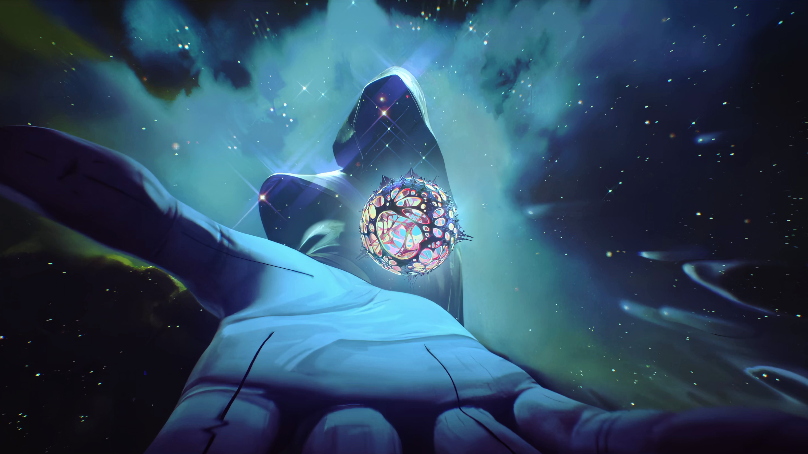
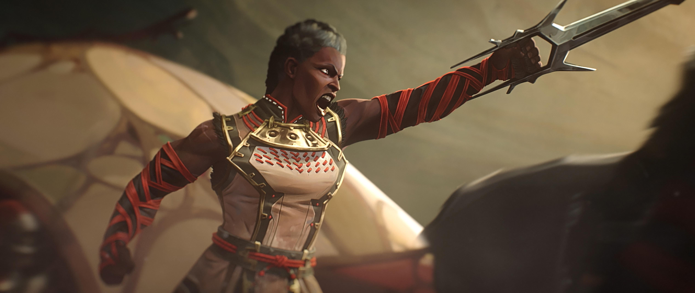
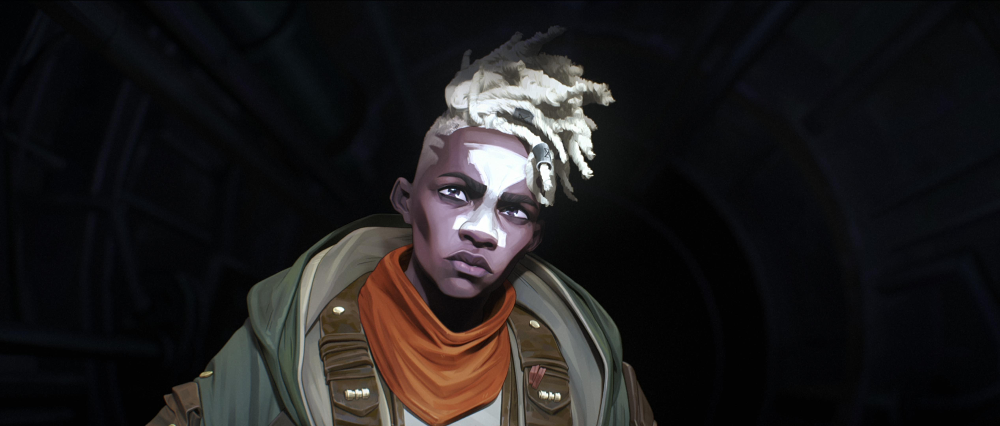
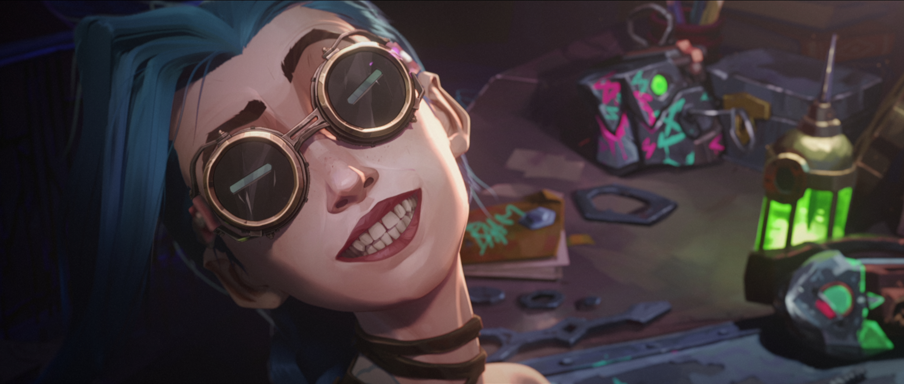
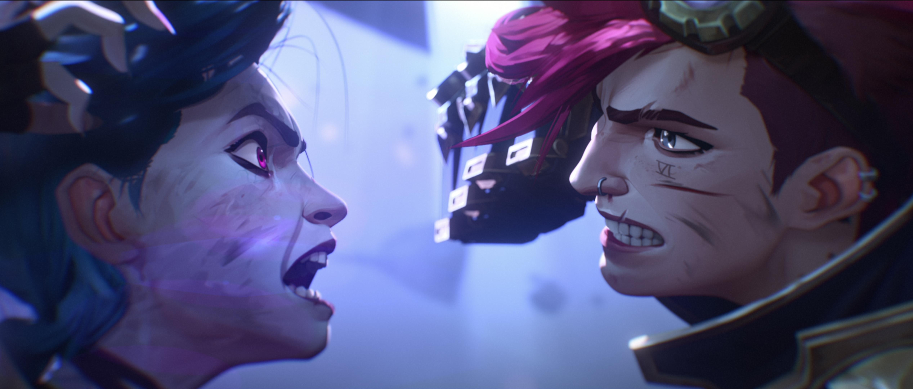
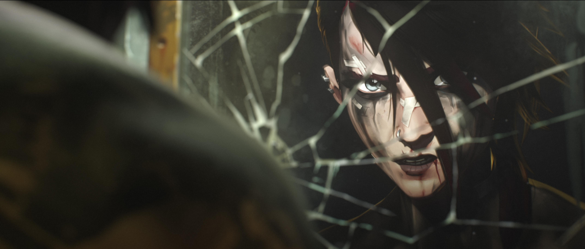
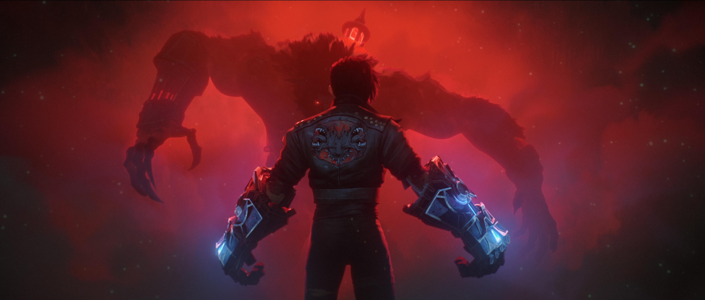
La historia gira principalmente en torno a la trágica relación entre dos hermanas:
Es la hermana menor de Vi. Marcada por traumas del pasado, se convierte en una peligrosa e inestable inventora experta en explosivos y armas personalizadas como su ametralladora "Pum-Pum".

Es una luchadora fuerte, impulsiva y leal de los subterráneos de Zaun. Lucha a puño limpio con sus enormes guantes Hextech para proteger a sus seres queridos y encontrar a su hermana.
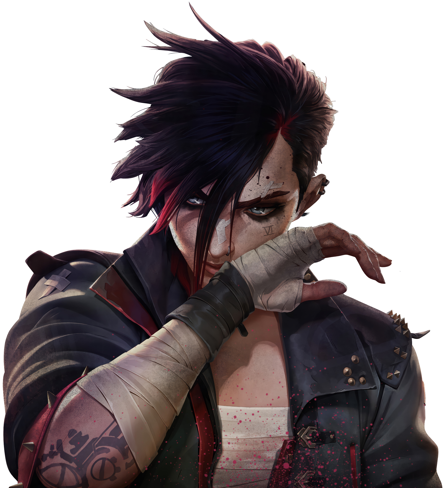
Un perspicaz e ingenioso investigador originario de los subterráneos de Zaun. Pese a sufrir una enfermedad terminal en las extremidades, trabaja incansablemente junto a Jayce para desarrollar la tecnología Hextech, buscando mejorar la vida de las personas vulnerables. Su obsesión por salvarse y lograr la evolución humana lo lleva a experimentar con límites peligrosos.
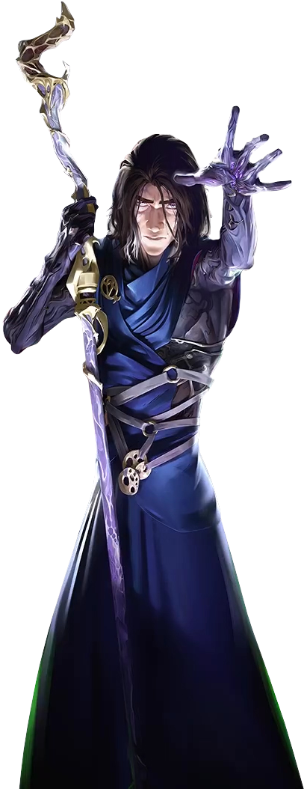
Un brillante e idealista científico e inventor de Piltóver. Junto a Viktor, logra revolucionar el mundo al dominar la tecnología Hextech, una fusión entre magia y ciencia. Su ascenso de ser un arriesgado estudiante a convertirse en miembro clave del Consejo Político de la ciudad lo enfrenta a duras decisiones éticas sobre el poder y la guerra.
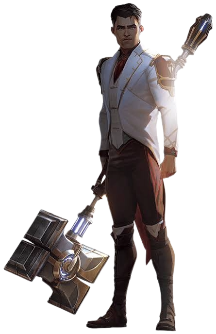
Proveniente de una de las familias nobles y adineradas de Piltóver, Caitlyn rechaza una vida de privilegios para convertirse en una dedicada Vigilante (policía). Es una hábil francotiradora y una detective guiada por un fuerte sentido de la justicia. Para investigar la corrupción y las amenazas en Zaun, decide liberar a Vi de prisión, forming una estrecha alianza con ella.
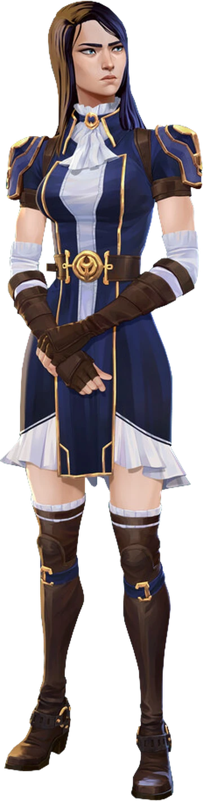
Amigo de la infancia de Vi y Powder (Jinx) en los barrios bajos de Zaun. Con el paso de los años, se convierte en un ingenioso inventor y en el intrépido líder de los Miserables (Firelights), una facción rebelde que lucha por proteger a los habitantes de Zaun y erradicar el control de la droga Shimmer.
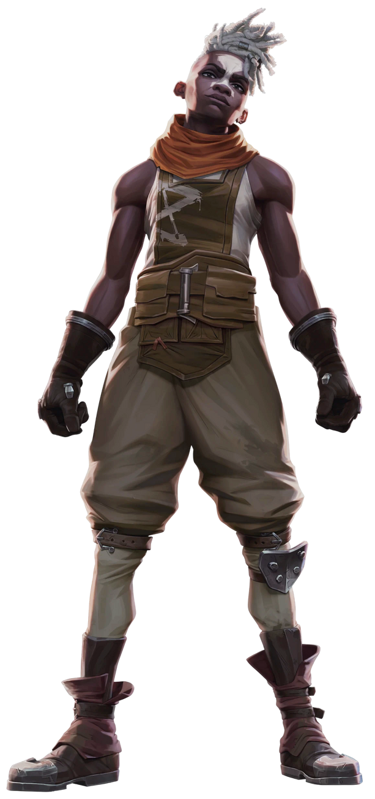
El despiadado y temido líder criminal del bajo mundo de Zaun. Antiguo compañero de armas de Vander, busca conseguir la independencia y soberanía de la ciudad subterránea a cualquier precio, utilizando la sustancia mutagénica Shimmer. Se convierte en una figura paterna profunda pero destructiva para Jinx.
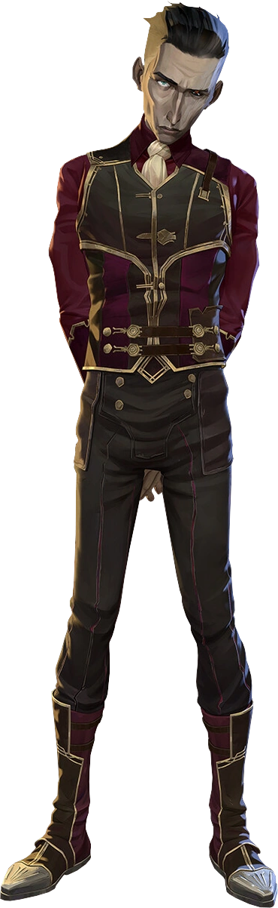
Un veterano y respetado líder de Zaun que actúa como el padre adoptivo de Vi y Jinx. Tras liderar en el pasado una sangrienta rebelión contra Piltóver, ahora busca mantener una frágil paz entre ambas ciudades para proteger a su comunidad y evitar más pérdidas inocentes.
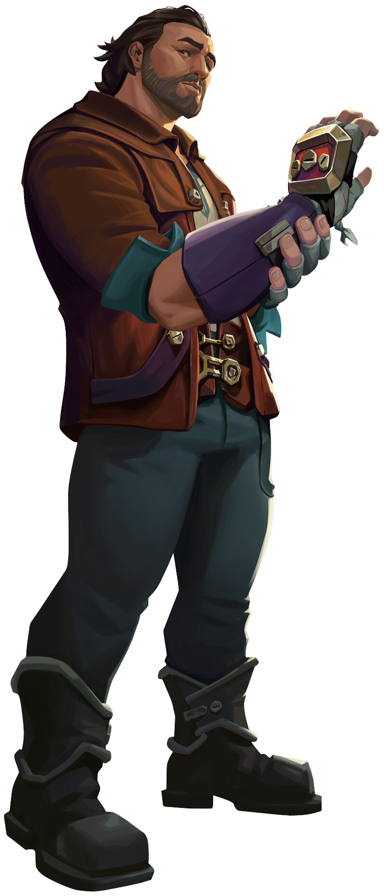
Un legendario e inteligente científico Yordle con más de tres siglos de vida, considerado uno de los fundadores de Piltóver y decano de la academia. Aunque lidera el Consejo con sabiduría y precaución, su desconfianza hacia la magia rúnica lo lleva a enfrentarse a las audaces ambiciones tecnológicas de sus alumnos Jayce y Viktor.
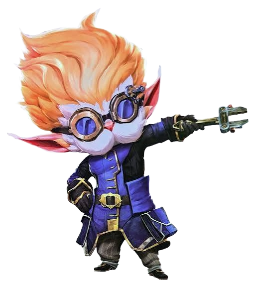